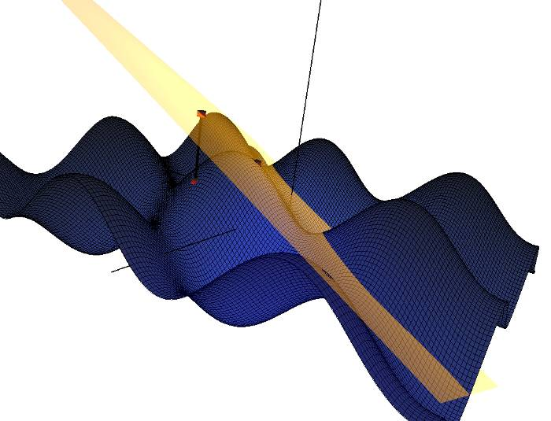
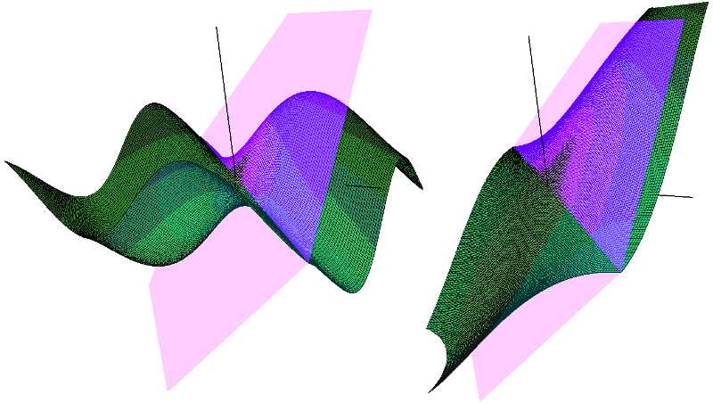
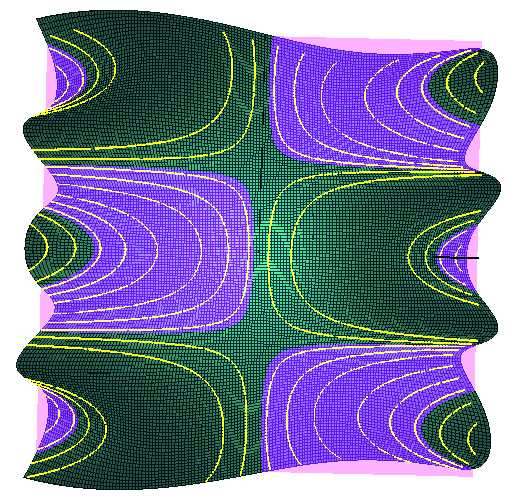
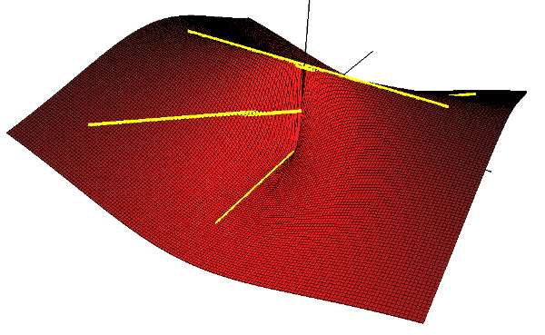

Chapter 5: Suggested Uses of Visualizations
- Chapter 1: Introduction
- Chapter 2: Traces Visualization
- Chapter 3: Tangent Plane Visualization
- Chapter 4: Limit Path Visualization
- Chapter 5: Suggested Uses of Visualizations
The tangent plane visualization illustrates how approximations improve as you move closer to the tangent point. You can see this in two ways. You could experiment with the location of the approximation point and consider the difference in values between the function value and the approximate value.
Another way to see this concept is by shrinking the function bounds and noticing how the tangent plane and the surface begin to resemble each other, i.e. if you make your bounds small enough, the surface will closely resemble its tangent plane.
The traces visualization assists students by displaying simultaneously the trace in 3D and 2D. This helps students see the relationship between the surface and its trace. The best way for students to fully utilize this visualization is to look at many examples and manipulate the 3D view in order to gain a better understanding of how traces relate to a surface. In addition, one can move a plane up and down the Z-axis when viewing the XY trace. This lets one see a trace at any height by looking at the intersection of the plane and the surface.
The limit path visualization demonstrates how different paths lead to different limits when considering a function whose limit does not exist at the origin. In order to see this, you need to plot multiple paths and take note of where they intersect the z-axis. For a function whose limit does not exist at the origin, you should be able to find at least two paths that arrive at different limits at (0,0). Once you find differing paths, you can open the point table and look at the values along various points of each path and compare how they diverge. You can select a path and move a point along it in order to see values at more specific points on the path. Overall, students faced with a limit problem can consult CalcSee3D and use it to better understand the nature of the limit. After they have developed a hunch, they can use formal methods that they have learned to prove the existence or non-existence of a limit on paper.
